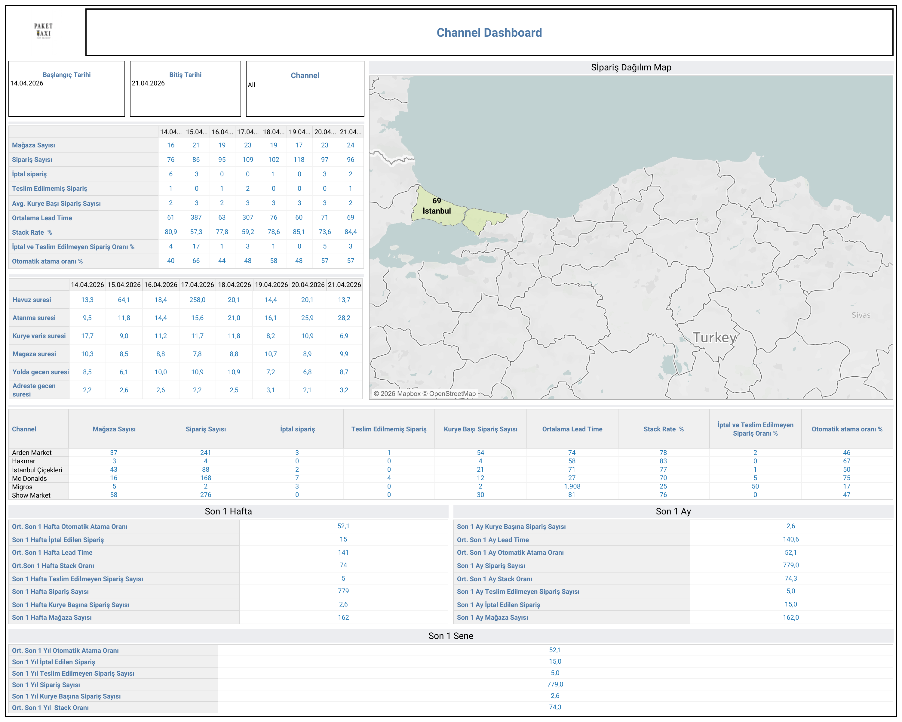

Canlı Rapora Erişin
Güncel channel performans verilerini Tableau üzerinde interaktif olarak görüntüleyin.
Dashboard Hakkında
Ne Gösterir?
Channel Dashboard, Paket Taxi'nin hizmet verdiği kanallar (Arden Market, Hakmar, İstanbul Çiçekleri, Mc Donalds, Migros, Show Market vb.) bazında sipariş performansını günlük olarak izler. Mağaza sayısı, sipariş hacmi, iptal oranları ve atama oranları kanal kırılımıyla analiz edilir.
- Günlük Sipariş Tablosu: Tarih bazlı mağaza sayısı, sipariş sayısı, iptal sipariş ve teslim edilemeyen sipariş verileri
- Havuz ve Atanma Süreleri: Günlük havuz süresi, atanma süresi, kurye varış süresi ve mağaza süresi
- Kanal Bazlı Özet: Her kanal için mağaza sayısı, sipariş sayısı, iptal, Stack Rate ve atama oranı karşılaştırması
- Son 1 Hafta / Son 1 Ay / Son 1 Sene: Kümülatif özet KPI'lar
- Sipariş Dağılım Haritası: Aktif mağaza lokasyonlarını harita üzerinde gösterir
- Filtreler: Başlangıç tarihi, bitiş tarihi ve channel seçimi
Dashboard Önizleme

Channel Dashboard — Tableau